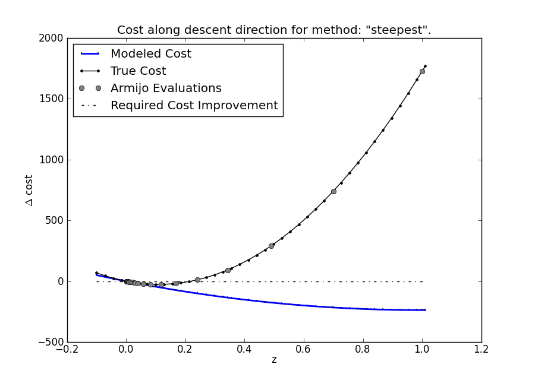

DOptimizer - Discrete Trajectory Optimization¶
Discrete trajectory optimization is performed with DOptimizer
objects. The optimizer finds a trajectory for a DSystem that
minimizes a DCost.
The optimizer should work for arbitrary systems, not just ones based
on variational integrators. You would need to define a compatible
DSystem class that supports the right functionality.
Examples
pend-on-cart-optimization.py
DOptimizer Objects¶
-
class
trep.discopt.DOptimizer(dsys, cost, first_method_iterations=10, monitor=None)[source]¶ You should create a new optimizer for each new system or cost, but for a given combination you can optimize as many different trajectories as you want. The optimization is designed to mostly be used through the
optimize()method.You can use the
DOptimizerMonitorclass to monitor progress during optimizations. If monitor isNone, the optimizer will useDOptimizerDefaultMonitorwhich prints useful information to the console.
-
DOptimizer.cost = cost The
DCostthat is optimized by this instance.
-
DOptimizer.optimize_ic¶ This is a Boolean indicating whether or not the optimizer should optimize the initial condition during an optimization.
Defaults to
False.Warning
This is broken for constrained systems.
-
DOptimizer.monitor¶ The
DOptimizerMonitorthat this optimization reports progress to. The default is a new instance ofDOptimizerDefaultMonitor.
-
DOptimizer.Qproj¶ -
DOptimizer.Rproj¶ These are the weights for an LQR problem used to generate a linear feedback controller for each trajectory. Each should be a function of k that returns an appropriately sized 2D
ndarray.The default values are identity matrices.
-
DOptimizer.descent_tolerance¶ A trajectory is considered a local minimizer if the norm of the cost derivative is less than this. The default value is 1e-6.
Cost Functions¶
-
DOptimizer.calc_dcost(X, U, dX, dU)[source]¶ Calculate the derivative of the cost function evaluated at X,U in the direction of a tangent trajectory dX,dU.
It is important that dX,dU be an actual tangent trajectory of the system at X,U to get the correct cost. See
check_ddcost()for an example where this is important.
-
DOptimizer.calc_ddcost(X, U, dX, dU, Q, R, S)[source]¶ Calculate the second derivative of the cost function evaluated at X,U in the direction of a tangent trajectory dX,dU. The second order model parameters must be specified in Q,R,S. These can be obtained through
calc_newton_model()or bycalc_descent_direction()when method=”newton”.It is important that dX,dU be an actual tangent trajectory of the system at X,U to get the correct cost. See
check_ddcost()for an example where this is important.
Descent Directions¶
-
DOptimizer.calc_steepest_model()[source]¶ Calculate a quadratic model to find a steepest descent direction:
\[Q = \mathcal{I} \quad R = \mathcal{I} \quad S = 0\]
-
DOptimizer.calc_quasi_model(X, U)[source]¶ Calculate a quadratic model to find a quasi-newton descent direction. This uses the second derivative of the un-projected cost function.
\[Q = \derivII[h]{x}{x} \quad R = \derivII[h]{u}{u} \quad S = \derivII[h]{x}{u}\]This method does not use the second derivative of the system dynamics, so it tends to be as fast
calc_steepest_model(), but usually converges much faster.
-
DOptimizer.calc_newton_model(X, U, A, B, K)[source]¶ Calculate a quadratic model to find a newton descent direction. This is the true second derivative of the projected cost function:
\[\begin{split}\begin{align*} Q(k_f) &= D^2m(x(k_f)) \\ Q(k) &= \derivII[\ell]{x}{x}(k) + z^T(k+1) \derivII[f]{x}{x}(k) \\ S(k) &= \derivII[\ell]{x}{u}(k) + z^T(k+1) \derivII[f]{x}{u}(k) \\ R(k) &= \derivII[\ell]{u}{u}(k) + z^T(k+1) \derivII[f]{u}{u}(k) \end{align*}\end{split}\]where:
\[\begin{split}\begin{align*} z(k_f) &= Dm^T(x(k_f)) \\ z(k) &= \deriv[\ell]{x}^T(k) - \mathcal{K}^T(k) \deriv[\ell]{u}^T(k) + \left[ \deriv[f]{x}^T(k) - \mathcal{K}^T(k) \deriv[f]{u}^T(i) \right] z(k+1) \end{align*}\end{split}\]This method depends on the second derivative of the system’s dynamics, so it can be significantly slower than other step methods. However, it converges extremely quickly near the minimizer.
-
DOptimizer.calc_descent_direction(X, U, method='steepest')[source]¶ Calculate the descent direction from the trajectory X,U using the specified method. Valid methods are:
- “steepest” - Use
calc_steepest_model() - “quasi” - Use
calc_quasi_model() - “newton” - Use
calc_newton_model()
The method returns the named tuple
(Kproj, dX, dU, Q, R, S).- “steepest” - Use
Armijo Line Search¶
-
DOptimizer.armijo_beta¶ -
DOptimizer.armijo_alpha¶ -
DOptimizer.armijo_max_iterations¶ Parameters for the Armijo line search performed at each step along the calculated descent direction.
armijo_beta should be between 0 and 1 (not inclusive). The default value is 0.7.
armijo_alpha should be between 0 (inclusive) and 1 (not inclusive). The default value is 0.00001.
armijo_max_iterations should be a positive integer. If the line search cannot satisfy the sufficient decrease criteria after this number of iterations, a
trep.ConvergenceErroris raised. The default value is 30.
-
DOptimizer.armijo_simulate(bX, bU, Kproj)[source]¶ This is a sub-function for armijo search. It projects the trajectory bX,bU to a real trajectory like DSystem.project, but it also returns a partial trajectory if the simulation fails. It is not intended to be used directly.
-
DOptimizer.armijo_search(X, U, Kproj, dX, dU)[source]¶ Perform an Armijo line search from the trajectory X,U along the tangent trajectory dX, dU. Returns the named tuple
(nX, nU, nCost)or raisestrep.ConvergenceErrorif the search doesn’t terminate before taking the maximum number of iterations.This method is used by
step()once a descent direction has been found.
Optimizing a Trajectory¶
-
DOptimizer.step(iteration, X, U, method='steepest')[source]¶ Perform an optimization step using a particular method.
This finds a new trajectory nX, nU that has a lower cost than the trajectory X,U. Valid methods are defined in DOptimizer.calc_descent_direction().
If the specified method fails to find an acceptable descent direction,
step()will try again with the method returned byselect_fallback_method().iteration is an integer that is used by
select_fallback_method()and passed to theDOptimizerMonitorwhen reporting the current step progress.Returns the named tuple
(done, nX, nU, dcost0, cost1)where:- done is a Boolean that is
Trueif the trajectory X,U cannot be improved (i.e, X,U is a local minimizer of the cost). - nX,nU are the improved trajectory
- dcost0 is the derivative of the cost at X,U.
- cost1 is the cost of the improved trajectory.
- done is a Boolean that is
-
DOptimizer.optimize(X, U, max_steps=50)[source]¶ Iteratively optimize the trajectory X,U until a local minimizer is found or max_steps are taken. The descent direction method used at each step is determined by
select_method().Returns the named tuple
(converged, X, U)where:- converged is a Boolean indicating if the optimization finished on a local minimizer.
- X,U is the improved trajectory.
-
DOptimizer.first_method_iterations¶ Number of steps to take using
first_methodbefore switching tosecond_methodfor the remaining steps. Seeselect_method()for more information on controlling the step method.Default: 10
-
DOptimizer.first_method¶ Descent method to use for the first iterations of the optimization.
Default: “quasi”
-
DOptimizer.second_method¶ Descent method to use for the optimzation after
first_method_iterationsiterations have been taken.Default: “netwon”
-
DOptimizer.select_method(iteration)[source]¶ Select a descent direction method for the specified iteration.
This is called by
optimize()to choose a descent direction method for each step. The default implementation takes a pre-determined number (lower_order_iterations) of “quasi” steps and then switches to the “newton” method.You can customize the method selection by inheriting
DOptimizerand overriding this method.
Debugging Tools¶
-
DOptimizer.descent_plot(X, U, method='steepest', points=40, legend=True)[source]¶ Create a descent direction plot at X,U for the specified method.
This is a useful plot for examining the line search portion of an optimization step. It plots several values along the descent direction line. All values are plotted against the line search parameter \(z \in \mathbb{R}\):
- The true cost \(g(\xi + z\delta\xi) - g(\xi)\)
- The modeled cost \(Dg(\xi)\op\delta\xi z + \half q\op(\delta\xi, \delta\xi)z^2\)
- The sufficient decrease line: \(g(\xi + z \delta\xi) < g(\xi) + \alpha z Dg(\xi)\op\delta\xi\)
- The armijo evaluation points: \(z = \beta^m\)
This is an example plot for a steepest descent plot during a particular optimization. This plot shows that the true cost increases much faster than the model predicts. As a result, 6 Armijo steps are required before the sufficient decrease condition is satisfied.
Example usage:
>>> import matplotlib.pyplot as pyplot >>> optimizer.descent_plot(X, U, method='steepest', legend=True) >>> pyplot.show()
-
trep.discopt.check_dcost(X, U, method='steepest', delta=1e-6, tolerance=1e-5)¶ Check the calculated derivative of the cost function at X,U with a numeric approximation determined from the original cost function.
DOptimizerMonitor Objects¶
DOptimizer objects report optimization progress to their
monitor object. The base implementation does nothing. The
default monitor DOptimizerDefaultMonitor mainly prints
reports to the console. You can define your own monitor to gather more detailed information like saving each intermediate trajectory.
Note that if you do want to save any values, you should save copies. The optimizer might reuse the same variables in each step to optimize memory usage.
-
class
trep.discopt.DOptimizerMonitor[source]¶ This is the base class for Optimizer Monitors. It does absolutely nothing, so you can use this as your monitor if you want completely silent operation.
-
DOptimizerMonitor.optimize_begin(X, U)[source]¶ Called when DOptimizer.optimize() is called with the initial trajectory.
-
DOptimizerMonitor.optimize_end(converged, X, U, cost)[source]¶ Called before DOptimizer.optimize() returns with the results of the optimization.
-
DOptimizerMonitor.step_begin(iteration)[source]¶ Called at the start of each DOptimize.step(). Note that step calls itself with the new method when one method fails, so this might be called multiple times with the same iteration.
All calls will be related to the same iteration until step_termination or step_completed are called.
-
DOptimizerMonitor.step_info(method, cost, dcost, X, U, dX, dU, Kproj)[source]¶ Called after a descent direction has been calculated.
-
DOptimizerMonitor.step_method_failure(method, cost, dcost, fallback_method)[source]¶ Called when a descent method results in a positive cost derivative.
-
DOptimizerMonitor.step_termination(cost, dcost)[source]¶ Called if dcost satisfies the descent tolerance, indicating that the current trajectory is a local minimizer.
-
DOptimizerMonitor.step_completed(method, cost, nX, nU)[source]¶ Called at the end of an optimization step with information about the new trajectory.
-
DOptimizerMonitor.armijo_simulation_failure(armijo_iteration, nX, nU, bX, bU)[source]¶ Called when a simulation fails (usually an instability) during the evaluation of the cost in an armijo step. The Armijo search continues after this.
-
DOptimizerMonitor.armijo_search_failure(X, U, dX, dU, cost0, dcost0, Kproj)[source]¶ Called when the Armijo search reaches the maximum number of iterations without satisfying the sufficient decrease criteria. The optimization cannot proceed after this.
-
DOptimizerMonitor.armijo_evaluation(armijo_iteration, nX, nU, bX, bU, cost, max_cost)[source]¶ Called after each Armijo evaluation. The semi-trajectory bX,bU was successfully projected into the new trajectory nX,nU and its cost was measured. The search will continue if the cost is greater than the maximum cost.
DOptimizerDefaultMonitor Objects¶
This is the default monitor for DOptimizer. It prints out
information to the console and records the cost and cost derivative
history.